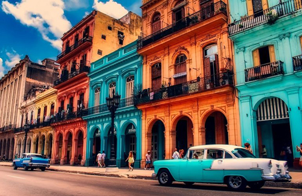

Kuba und die dort lebenden Arawak gerieten in der ersten Hälfte des 16. Jahrhunderts unter spanische Kontrolle. Innerhalb weniger Jahrzehnte wurden die indigenen Völker durch Gewalt und Krankheit praktisch ausgerottet. Zur Durchführung des sehr arbeitsintensiven Zuckerrohranbaus setzten die spanischen Pflanzer im 17. und 18. Jahrhundert zehntausende Sklaven ein, die vorwiegend aus Westafrika importiert wurden.
Die Kämpfe der Kolonie um Unabhängigkeit begannen 1868 und dauerten mit Unterbrechungen bis zum Abzug der Spanier im Jahr 1898 an, als die USA intervenierten (Spanisch-Amerikanischer Krieg).
Im Zehnjährigen Krieg (1868–1878) und im Kleinen Krieg (1878–1879) um die Unabhängigkeit waren die Kubaner noch gescheitert. Am 10. Dezember 1898 erklärte Spanien im Friedensvertrag von Paris den Verzicht auf Kuba und die Philippinen. Zuvor kämpften der kubanische Nationalheld José Martí und die Oberbefehlshaber Máximo Gómez und Antonio Maceo im Unabhängigkeitskrieg seit 1895 mit einer sehr kleinen Armee gegen über 200.000 Spanier.
Nach dem Ende des Spanisch-Amerikanischen Krieges besetzten die USA die Insel, bis sie schließlich 1902 die formale Unabhängigkeit erlangte. Das Frauenwahlrecht wurde 1934 eingeführt.Die Souveränität war bis 1934 jedoch durch das Platt Amendment eingeschränkt, das den USA bei Beeinträchtigung US-amerikanischer Interessen ein jederzeitiges Interventionsrecht in Kuba gab. Ein Überrest dieser US-amerikanischen Sonderrechte ist der gegen den erklärten kubanischen Willen noch heute von den USA aufrechterhaltene Marinestützpunkt Bahía de Guantánamo (Guantánamo Bay), dessen Militärgefängnis infolge der Terroranschläge am 11. September 2001 internationale Bekanntheit erlangte.
Anfang 1959 stürzten die kubanischen Revolutionäre unter der Führung von Fidel und Raúl Castro, Camilo Cienfuegos und dem Argentinier Ernesto Guevara, genannt Che, den kubanischen Diktator Fulgencio Batista und errichteten ab 1961 (Deklaration von Havanna) einen sozialistischen Staat. Die damit verbundenen Enteignungen von US-Firmen und US-Bürgern führten zu einem dauerhaften Embargo der USA und weiterer westlicher Staaten gegen Kuba. Kuba suchte und fand Unterstützung bei den sozialistischen Staaten Osteuropas, insbesondere der damaligen Sowjetunion.
Aufgrund der strategischen Lage Kubas eskalierte 1962 der Konflikt zwischen den USA und der UdSSR in der sogenannten Kubakrise. Noch heute leidet Kuba unter wirtschaftlichen Sanktionen und ist als eines von wenigen Ländern nicht Mitglied in supranationalen Bündnissen.
In mehreren Flüchtlingswellen verließen tausende Kubaner ihre Heimat, von denen sich ein Großteil in Florida, insbesondere in Miami (siehe Little Havana), ansiedelte.
Mit dem Ende der kommunistischen Diktaturen in Osteuropa nach den Revolutionen im Jahr 1989 fielen Kubas wichtigste Handelspartner und Geldgeber (Sowjetunion und übrige RGW-Staaten) weg und Kuba erlebte zu Beginn der 1990er-Jahre eine schwere Wirtschaftskrise, die 1993 ihren Höhepunkt erreichte. Hatte Kuba zuvor fast seine gesamte Zuckerernte in die sozialistischen Staaten Osteuropas verkauft und im Gegenzug zwei Drittel seiner Nahrungsmittel, fast das gesamte Öl und 80 Prozent seiner Maschinen und Ersatzteile von dort bezogen, so waren auf einmal 85 Prozent seines Außenhandels weggebrochen. Die Industrie und das Transportwesen kamen wegen Ölmangels zum Erliegen und infolge drastischer Nahrungsmittelrationierungen kam es erstmals seit vielen Jahren zu Unterernährung auf der Insel. 1992 beschloss die Regierung, als Ersatz für den verlorengegangenen Außenhandel die Tourismusindustrie zu entwickeln.Unter der Führung von Carlos Lage wurde die Wirtschaft dezentralisiert und privatwirtschaftliche Tätigkeit und Devisenhandel in einigen bestimmten Segmenten des Wirtschaftslebens zugelassen. Joint-Venture-Geschäfte im Tourismussektor, die Zusammenarbeit mit neuen Außenwirtschaftspartnern (unter anderem Spanien, Italien, Kanada, Brasilien, Volksrepublik China, Venezuela), die Entdeckung von neuen Erdölvorkommen und die Vermarktung der bedeutenden Nickelvorkommen trugen zur Stabilisierung der kubanischen Wirtschaft bei. Allerdings entstanden auch soziale Disparitäten.
Nachdem durch die notwendig gewordene Wiedereingliederung Kubas in den karibischen Wirtschaftsraum ein gewisser wirtschaftlicher Aufschwung zu verzeichnen war, führten die Hurrikans von 2008, die sich zeitlich mit dem Höhepunkt der globalen Wirtschaftskrise überschnitten, zu einer erneuten Verschärfung der Krise. Die kubanische Bevölkerung spricht von ihr seitdem als der segunda crisis de los 90 (zweiten Krise der 90er).2006 angekündigte Wirtschaftsreformen wurden fünf Jahre später von der kubanischen Nationalversammlung als neue „Leitlinien der Wirtschafts- und Sozialpolitik“ (lineamientos de la política económica y social) gebilligt. 2012 war die Versorgungskrise aus den Jahren um 2008 überwunden. Die Atmosphäre ist laut dem Spiegel-Korrespondenten Jens Glüsing „offener und entspannter“, der wirtschaftliche Aufschwung sei überall zu spüren.Die inflationsbereinigten Gehälter erreichten 2011 jedoch weiterhin lediglich 51 % des Wertes von 1989.
Im Mai 2013 bestätigte der FAO-Generaldirektor José Graziano da Silva in einem Gespräch mit Raúl Castro, dass Kuba das 1996 beim Weltgipfel der FAO in Rom definierte Ziel der Halbierung der Zahl der unterernährten Personen vorzeitig erreicht habe. Kuba befindet sich unter den 16 Ländern, die weltweit bei der Bekämpfung des Hungers die größten Fortschritte vorzuweisen hätten.Die Öffnung der zentralistischen Staatswirtschaft erfolgte jedoch so zurückhaltend, dass keine belebende Effekte auftraten und sich das Land 2017 gar in einer Rezession befand.
Mehr Informationen über Kuba findest du hier!
Wenn du mehr über meine Reise nach Kuba wissen möchtest, dann schreib mir hier: